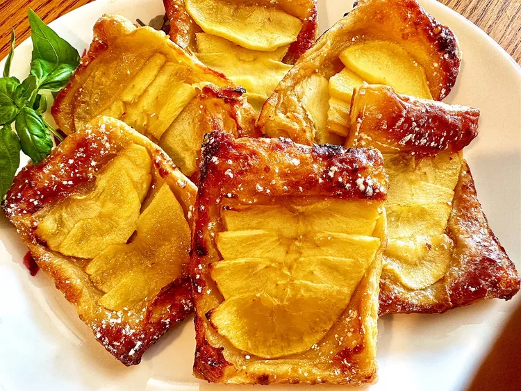

4-Ingredient Fruit Tarts

Description
Super easy 4 ingredients only fruit tarts for everybody and every fruit tastes!
Ingredients
As promised there are omly four of them .
- 2 pears, thinly sliced
- 3/4 cup honey
- 1 sheet puff pastry (thawed if frozen)
- 1 large egg, beaten
Directions
4 ingredients so 4 steps as well! Brilliant! Isnt it
- Preheat the oven to 400 degrees F (200 degrees C). Line a baking sheet with parchment paper.
- Pour about 2 tablespoons of honey into a 2x3 inch rectangular shape on to the parchment paper. Arrange 1/6 of the pear slices over the honey.
- Lightly roll out the puff pastry sheet and cut into 6 rectangles. Place 1 pastry rectangle over the pear slices and press down to seal in the fruit. Repeat process with remaining honey, pears, and pastry. Brush each pastry with egg.
- Bake in the preheated oven until golden brown and flaky, 13 to 16 minutes.